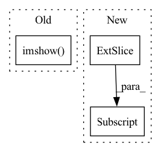

Pattern ID :19625
Before Change
for j in range(seq_length):
imgRGB = seq_img[j]
imgRGB = (imgRGB - imgRGB.min()) / (imgRGB.max() - imgRGB.min())
img = plt.imshow( imgRGB, animated=True)
text1 = plt.text(
200, 200, f"t = {j}", ha="center", va="center", size=10, bbox=dict(boxstyle="round", ec="b", lw=2)
)
text = plt.text(After Change
// 200, 200, f"t = {j}", ha="center", va="center", size=10, bbox=dict(boxstyle="round", ec="b", lw=2)
// )
img = cv2.putText(imgRGB, f"t = {j}", (350, 450), font, color=(0, 0, 0), fontScale=1, thickness=2)
img = cv2.putText(img, f"{i}. {data["language"]["ann"][i]}", (100, 20), font, color=(0, 0, 0), fontScale=0.5, thickness=1)[:,:,::-1]
// text = plt.text(
// 100,
// 20,
// f"{i}. {data["language"]["ann"][i]}",In pattern: SUPERPATTERN
Frequency: 4
Non-data size: 3
Instances Fragment ID: 63964725
Project Name: mees/calvin
Commit Name: 0d837d79694f91c01b2993dbe9d346108f681990
Time: 2021-10-26
Author: lukas.hermann@gmx.de
File Name: calvin/utils/visualize_annotations.py
M Class Name: AnonimousClass
N Class Name: AnonimousClass
M Method Name: generate_single_seq_gif(6)
N Method Name: generate_single_seq_gif(6)
M Parent Class:
N Parent Class:
M File Name: calvin/utils/visualize_annotations.py
N File Name: calvin/utils/visualize_annotations.py
M Start Line: 26
M End Line: 43
N Start Line: 24
N End Line: 46
Before Change
"""
// plot the mask and the transformed image according to estimated homography
axis9.imshow( mask_batch1[nbr, :, :], vmin=0, vmax=1)
axis9.set_title("mask for backpropagation, sum {}".format(np.sum(mask_batch1[nbr, :, :])))
im10 = axis10.imshow(
cv2.warpPerspective(image1[nbr, :, :], metrics_per_image["{}".format(nbr)]After Change
metrics_per_image["{}".format(nbr)]["nbr_kp1"],
metrics_per_image["{}".format(nbr)]["total_nbr_kp_reward1"]), fontsize="medium")
im6 = axis6.imshow(image2[nbr, :, :] , cmap="gray", origin="upper", vmin=0.0, vmax=255.0)
axis6.scatter(metrics_per_image["{}".format(nbr)]["to_plot"]["keypoints_map2"][1],
metrics_per_image["{}".format(nbr)]["to_plot"]["keypoints_map2"][0], s=2,
color="green") Fragment ID: 63964726
Project Name: prunetruong/glampoints_pytorch
Commit Name: 5b860576ff1326eb4cf9d39059299def5766979f
Time: 2020-03-11
Author: truongp@ethz.ch
File Name: utils_training/utils_CNN.py
M Class Name: AnonimousClass
N Class Name: AnonimousClass
M Method Name: plot_training(11)
N Method Name: plot_training(11)
M Parent Class:
N Parent Class:
M File Name: utils_training/utils_CNN.py
N File Name: utils_training/utils_CNN.py
M Start Line: 61
M End Line: 132
N Start Line: 63
N End Line: 122
Before Change
"""
// plot the mask and the transformed image according to estimated homography
axis9.imshow( mask_batch1[nbr, :, :], vmin=0, vmax=1)
axis9.set_title("mask for backpropagation, sum {}".format(np.sum(mask_batch1[nbr, :, :])))
im10 = axis10.imshow(
cv2.warpPerspective(image1[nbr, :, :], metrics_per_image["{}".format(nbr)]After Change
metrics_per_image["{}".format(nbr)]["nbr_kp1"],
metrics_per_image["{}".format(nbr)]["total_nbr_kp_reward1"]), fontsize="medium")
im6 = axis6.imshow(image2[nbr, :, :] , cmap="gray", origin="upper", vmin=0.0, vmax=255.0)
axis6.scatter(metrics_per_image["{}".format(nbr)]["to_plot"]["keypoints_map2"][1],
metrics_per_image["{}".format(nbr)]["to_plot"]["keypoints_map2"][0], s=2,
color="green") Fragment ID: 63964727
Project Name: prunetruong/glampoints_pytorch
Commit Name: f38355011986da618fd83be6317501d483c3b598
Time: 2020-03-11
Author: truongp@ethz.ch
File Name: utils_training/utils_CNN.py
M Class Name: AnonimousClass
N Class Name: AnonimousClass
M Method Name: plot_training(11)
N Method Name: plot_training(11)
M Parent Class:
N Parent Class:
M File Name: utils_training/utils_CNN.py
N File Name: utils_training/utils_CNN.py
M Start Line: 61
M End Line: 132
N Start Line: 63
N End Line: 122
Before Change
image = cv2.imread(img_path)
draw1 = cv2.rectangle(image, (int(x1), int(y1)), (int(x2), int(y2)), (0, 0, 255), 2)
cv2.imshow( "draw 1", draw1)
cv2.waitKey(0)
cv2.destroyAllWindows()
After Change
x1, y1, x2, y2 = bbox
bbox_img = cv2.rectangle(image, (int(x1), int(y1)), (int(x2), int(y2)), (0, 0, 255), 5)
bbox_img = pil_img.fromarray(bbox_img[:, :, :3] .astype(np.uint8))
return np.asarray(bbox_img)
Fragment ID: 63964728
Project Name: jeff-sjtu/hybrik
Commit Name: 164afda85433aa532f346dde4b3aa0303f11c6fa
Time: 2022-04-26
Author: jeff.lee.sjtu@gmail.com
File Name: hybrik/utils/vis.py
M Class Name: AnonimousClass
N Class Name: AnonimousClass
M Method Name: vis_bbox(2)
N Method Name: vis_bbox(2)
M Parent Class:
N Parent Class:
M File Name: hybrik/utils/vis.py
N File Name: hybrik/utils/vis.py
M Start Line: 63
M End Line: 67
N Start Line: 63
N End Line: 66